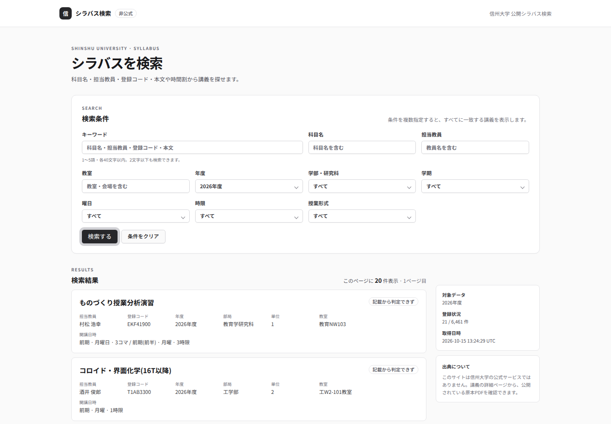
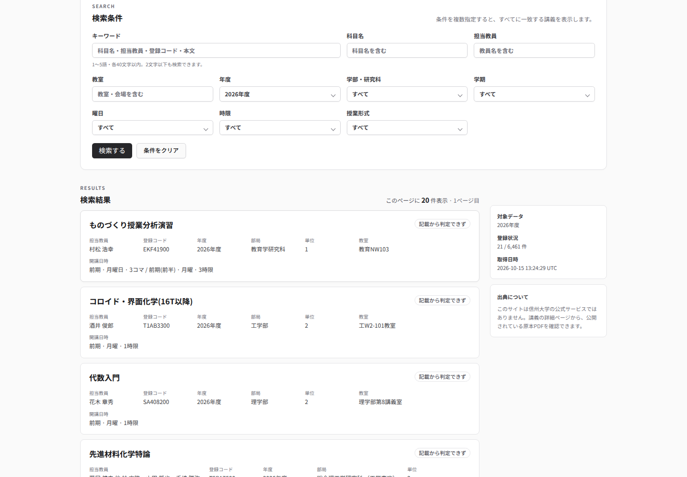

QA-SEARCH-001
条件を追加せず「検索する」を押す
- Given
- 未認証の新しいブラウザーで公開検索ページを開き、既定条件の検索フォームが見える
- When
- 条件を追加せず「検索する」を押す
- Then
- 認証要求なしで20件の一覧と21/6461件の対象範囲が表示される


Non-browser evidence
Supplemental ・ file ・ supplemental/duplicate-recapture.json ・ 2026-10-15T14:20:09+00:00